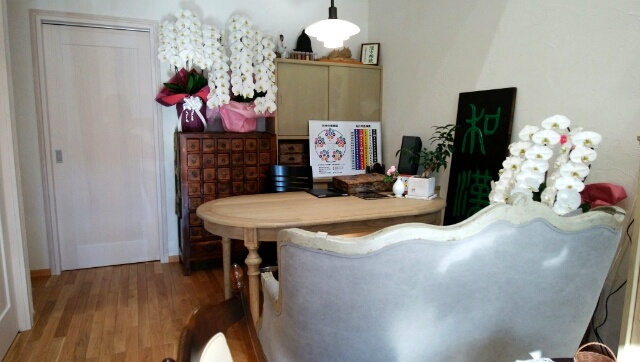
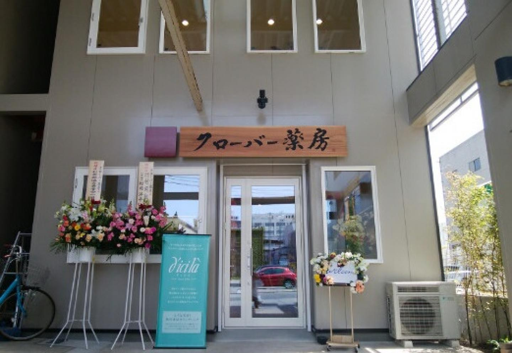
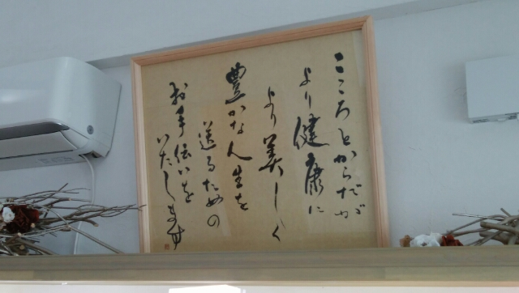

こころとからだに、やさしく寄り添う。あなたに合った漢方・自然薬を一緒に。
冷え・こころの疲れ・眠り・便秘・がん・女性特有のお悩みなど、どうぞお気軽にお聞かせください。
お問い合わせ先：018-833-3211 ／ cloveryakubou@ace.ocn.ne.jp
まずはお気軽にご相談ください
からだの小さなサインも、やさしく受けとめてご相談を承ります。
ご相談窓口
クローバー薬房では、じっくりお話を伺うため予約優先で漢方相談を承っています。お電話はもちろん、メールでもお気軽にお問い合わせください。

こんなお悩みはありませんか？
冷え
手足やお腹・腰の冷え、冷房による冷え、温めても戻りやすい冷えなど。
詳しくはこちら →眠り
寝つきが悪い、途中で目が覚める、朝すっきりしない、眠った感じがしないなど。
詳しくはこちら →こころの疲れ
眠れない、やる気が出ない、イライラ・不安、疲れが抜けない、集中しにくいなど。
詳しくはこちら →便秘
便が硬い、出にくい、残便感、お腹の張りなど、便通に関するお悩みについて。
詳しくはこちら →アレルギー・アトピー
アトピー性皮膚炎、花粉・ダニによる鼻や肌の不調、かゆみ・乾燥などのお悩みについて。
詳しくはこちら →がん
治療中・治療後の食欲、疲れ、眠り、便通、気持ちや生活のお悩みについて。
詳しくはこちら →目
緑内障・白内障・黄斑変性症など、目に関するお悩みについて。
※医療機関での診断・治療を大切にしながらご相談を承ります。
詳しくはこちら →腎臓（慢性腎臓病「CKD」）
健康診断などで「クレアチニンが高い」「eGFRが低い」と言われた、腎機能の数値が気になるなど。血清クレアチニンは腎機能の評価に使われる血液検査の数値の一つで、eGFRは血清クレアチニン値・年齢・性別から腎臓のろ過能力を推定する指標です。
※医療機関での診断・治療を大切にしながらご相談を承ります。
詳しくはこちら →女性・身体のお悩み
月経・PMS・更年期、手指・肩・腰・関節など、女性の年代や体の変化に伴うお悩みについて。
詳しくはこちら →「私の場合は？」を一緒に見つける漢方の入口「私の場合は？」から始める漢方
気になる症状から、漢方の考え方・体質・相談へ。順番に進めます。
気になる症状を見つめる
冷え、こころの疲れ、眠り、便秘、アレルギー・アトピーなど。
02次に漢方ではこう考える
症状名だけでなく、冷え・体力・気血水など全体のバランスを見ます。
03そして体質は人それぞれ
同じ症状でも背景は違います。複数の傾向が重なることもあります。
04おすすめ体質セルフチェック
今のあなたに出やすい傾向を、簡単な質問で振り返ってみましょう。
3分でチェックしてみる →クローバー薬房の漢方相談
お一人おひとりに寄り添いながら、無理のない方法を一緒に考えます。
① じっくり伺う
症状だけでなく、これまでの経過、食事、睡眠、生活習慣などもお聞きします。
② 一人ひとりに合わせる
同じお悩みでも、体質や生活環境によって考え方は異なります。
③ 養生も大切に
食事・睡眠・身体の休め方など、日々取り入れやすい養生も一緒に考えます。
店舗のようす
落ち着いてご相談いただける空間です。

ゆっくりお話しいただける、落ち着いた空間です。

木の看板が目印です。

大切にしている想いを掲げています。
初めての方へ
「漢方相談って何を聞かれるの？」「病院の薬を飲んでいても相談できる？」など、初めての方にもわかりやすくご説明します。
相談事例
実際にお伺いしたご相談の一部を、個人が特定されない形でご紹介します。
秋田で漢方・自然薬のことならクローバー薬房へ
一人で悩まず、まずはお話を聞かせてください。